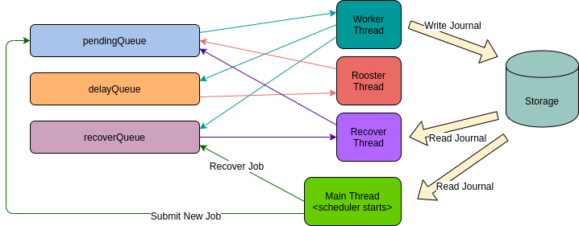

HDFS Federation Balance is a tool balancing data across different federation namespaces. It uses DistCp to copy data from the source path to the target path. First it creates a snapshot at the source path and submits the initial distcp. Second it uses distcp diff to do the incremental copy until the source and the target are the same. Then If it’s working in RBF mode it updates the mount table in Router. Finally it moves the source to trash.
This document aims to describe the usage and design of the HDFS Federation Balance.
The hdfs federation balance tool supports both normal federation cluster and router-based federation cluster. Taking rbf for example. Supposing we have a mount entry in Router:
Source Destination /foo/src hdfs://namespace-0/foo/src
The command below runs an hdfs federation balance job. The first parameter is the mount entry. The second one is the target path which must include the target cluster.
bash$ /bin/hadoop rbfbalance -router submit /foo/src hdfs://namespace-1/foo/dst
It copies data from hdfs://namespace-0/foo/src to hdfs://namespace-1/foo/dst incrementally and finally updates the mount entry to:
Source Destination /foo/src hdfs://namespace-1/foo/dst
If the hadoop shell process exits unexpectedly, we can use the command below to continue the unfinished job:
bash$ /bin/hadoop rbfbalance continue
This will scan the journal to find all the unfinished jobs, recover and continue to execute them.
If we want to balance in a normal federation cluster, use the command below.
bash$ /bin/hadoop fedbalance submit hdfs://namespace-0/foo/src hdfs://namespace-1/foo/dst
In normal federation mode the source path must includes the path schema.
The hdfs federation balance tool has 2 modes:
The command rbfbalance runs in router-based federation mode. The command fedbalance runs in normal federation mode.
In the rbf mode the first parameter is taken as the mount point. It disables write by setting the mount point readonly.
In the normal federation mode the first parameter is taken as the full path of the source. The first parameter must include the source cluster. It disables write by cancelling all the permissions of the source path.
Details about disabling write see HDFS FedBalance.
Command submit has the following options:
| Option key | Description | Default |
|---|---|---|
| -forceCloseOpen | Force close all open files when there is no diff in the DIFF_DISTCP stage. | Wait until there is no open files. |
| -map | Max number of concurrent maps to use for copy. | 10 |
| -bandwidth | Specify bandwidth per map in MB. | 10 |
| -delay | Specify the delayed duration(millie seconds) when the job needs to retry. | 1000 |
| -moveToTrash | This options has 3 values: trash (move the source path to trash), delete (delete the source path directly) and skip (skip both trash and deletion). By default the server side trash interval is used. If the trash is disabled in the server side, the default trash interval 60 minutes is used. |
trash |
| -diffThreshold | Specify the threshold of the diff entries that used in incremental copy stage. If the diff entries size is no greater than the threshold and the open files check is satisfied(no open files or force close all open files), the fedBalance will go to the final round of distcp. Setting to 0 means waiting until there is no diff. | 0 |
Set configuration options at hdfs-fedbalance-site.xml.
| Configuration key | Description | Default |
|---|---|---|
| hdfs.fedbalance.procedure.work.thread.num | The worker threads number of the BalanceProcedureScheduler. BalanceProcedureScheduler is responsible for scheduling a balance job, including submit, run, delay and recover. | 10 |
| hdfs.fedbalance.procedure.scheduler.journal.uri | The uri of the journal, the journal file is used for handling the job persistence and recover. | hdfs://localhost:8020/tmp/procedure |
The components of the HDFS Federation Balance can be classified into the following categories:
The Balance Procedure Scheduler implements a state machine. It’s responsible for scheduling a balance job, including submit, run, delay and recover. The model is showed below:

HDFS FedBalance is implemented as a job of the state machine. All the distcp balance logic are implemented here. An HDFS FedBalance job consists of 3 procedures:
DistCpProcedure: This is the first procedure. It handles all the data copy works. There are 6 stages:
-diff round by round to sync source and target paths. If -forceCloseOpen is set, this stage will finish when there is no diff between src and dst. Otherwise this stage only finishes when there is no diff and no open files.MountTableProcedure: This procedure updates the mount entry in Router. The readonly is unset and the destination is updated of the mount point. This procedure is activated only in router based federation mode.
TrashProcedure: This procedure moves the source path to trash.
After all 3 procedures finish, the balance job is done.